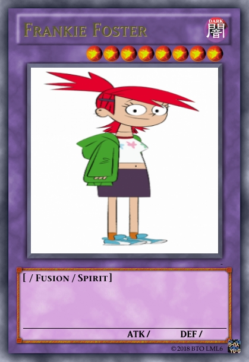
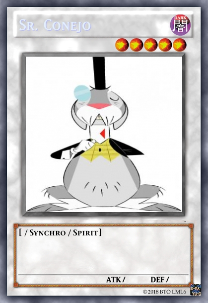
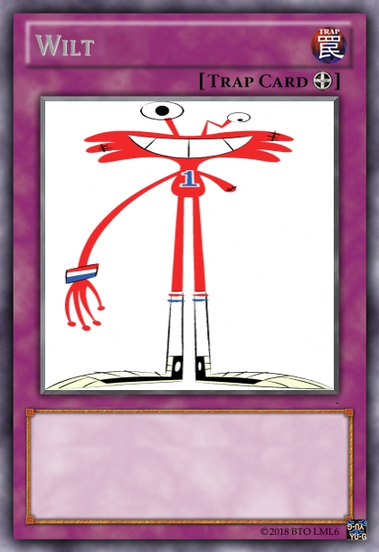
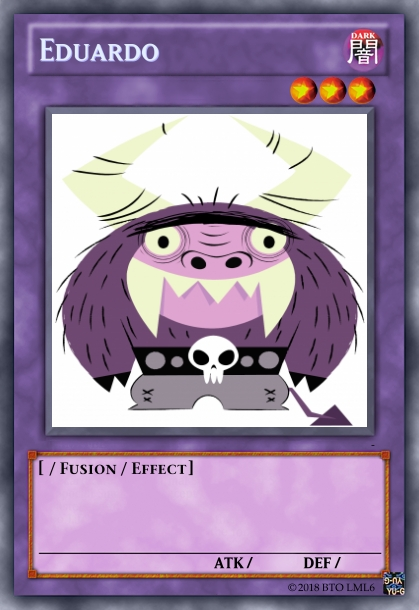
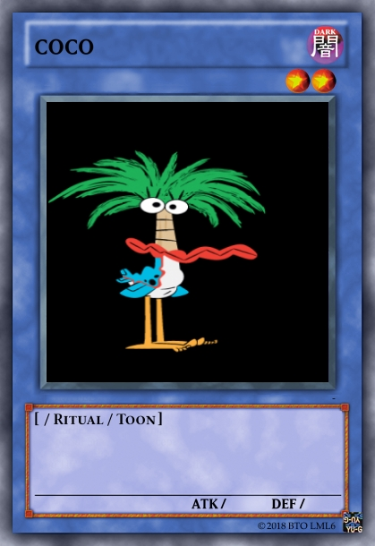
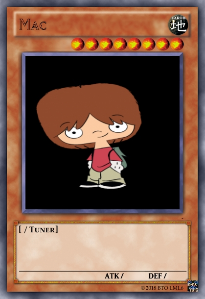
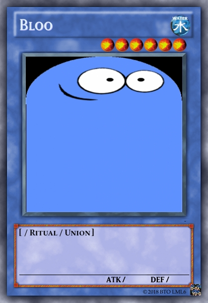
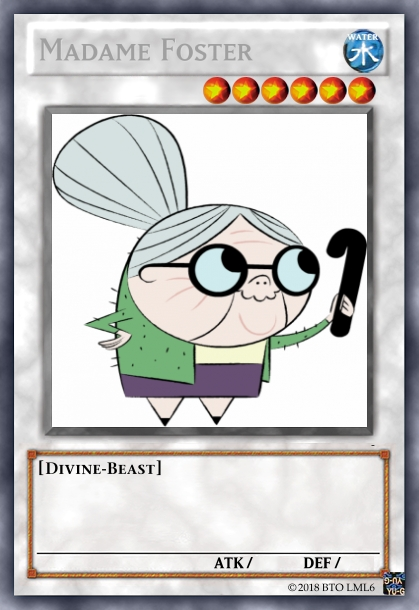

La serie se centra en las aventuras experimentadas por el travieso Bloo, Mac, y el conjunto de personajes excéntricos y coloridos que habitan en la casa de Foster, luego de que Mac es obligado a abandonar a su amigo imaginario.
El mundo de Foster consiste en un mundo donde los amigos imaginarios se vuelven reales en el momento en que un niño los imagina. El problema ocurre que cuando el niño crece, se empieza a generar un desinterés por ellos y por tanto son abandonados y deben cuidarse por su propia cuenta. Por esta razón, se funda una mansión para todos estos amigos imaginarios abandonados llamada "Mansión Foster para Amigos Imaginarios", ubicada en 1123 Wilson Way.
 
 
 
 